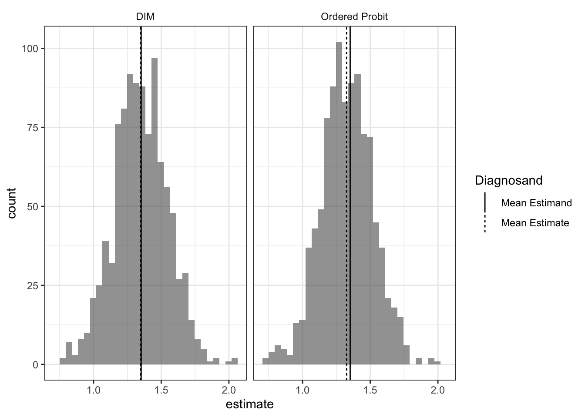

library(Zelig)
library(ZeligChoice)
# This helper function implements an ordered probit model using zelig; calculates
# quantities of interest and return tidy output
ordered_probit <-
function(data) {
zelig_out <- zelig(Y ~ Z, model = "oprobit", data = data, cite = FALSE)
sim_out <- sim(zelig_out, x = setx(zelig_out, Z = 0), x1 = setx(zelig_out, Z = 1))
zelig_df <- zelig_qi_to_df(sim_out)
predictions <- with(zelig_df,
(X1 + 2 * X2 + 3 * X3 + 4 * X4 + 5 * X5)[Z == 1] -
(X1 + 2 * X2 + 3 * X3 + 4 * X4 + 5 * X5)[Z == 0])
return_dat <-
data.frame(term = "Z",
estimate = mean(predictions),
std.error = sd(predictions),
conf.low = quantile(predictions, .025),
conf.high = quantile(predictions, .975))
}We sometimes worry about whether we need to model data generating processes correctly. For example you have ordinal outcome variables, on a five-point Likert scale. How should you model the data generation process? Do you need to model it at all? Go-to approaches include ordered probit and ordered logit models which are designed for this kind of outcome variable. But maybe you don’t need them. After all, the argument that the difference-in-means procedure estimates the treatment effect doesn’t depend on any assumptions about the type of data (as long as expectations are defined)—ordered, count, censored, etc. We diagnose a design that hedges by using both differences in means and an ordered probit model. We do so assuming that the ordered probit model correctly describes data generation. Which does better?
For the design declaration we assume that the estimand of interest is the average treatment effect on the scale of the data. We do this, perhaps contentiously, even though our outcome is defined on a 1 to 5 ordinal scale. The estimand can be thought of as the average number of steps up or down induced by treatment. This estimand has to be interpreted cautiously, however. In particular it presupposes an interest in outcomes in terms of “steps.” But the “size” of steps depends on the categories provided. Adding in an extra option in the middle of a scale, for example, changes the range of the scale and changes the value of the estimand. Given these issues, other estimands are possible and perhaps preferable (Volfovsky, Airoldi, and Rubin 2015), but for this design, we’ll focus on the ATE.
Surprisingly, perhaps, we find no real difference between the model-based ordinal logit approach and the differences in means approach. The ordered probit is much more complicated to implement and to draw inferences from: the model is estimated using maximum likelihood, simulation is then used to generate a distribution of fitted values, from which a simulation of the distribution of treatment effects is produced. The standard deviation of these differences is used as an estimate of the standard deviation of treatment effects. The Zelig package (Choirat et al. 2018) makes it easy to do all this quite compactly and turn it all into a step in our design.
We call the zelig library, set some parameters, and define a function to take data in and return results.
We can now declare the design:
ordered_probit_design <-
declare_model(
N = 200,
noise = rnorm(N),
potential_outcomes(Y ~ draw_ordered(1 * Z + noise, breaks = c(0, 0.75, 1, 1.25)))
) +
declare_assignment(Z = complete_ra(N)) +
declare_inquiry(ate = mean(Y_Z_1 - Y_Z_0)) +
declare_measurement(Y = reveal_outcomes(Y ~ Z)) +
declare_estimator(Y ~ Z, inquiry = "ate", label = "DIM") +
declare_estimator(handler = label_estimator(ordered_probit), inquiry = "ate", label = "Ordered Probit")Sample treatment/outcome data look like this:

Diagnosis goes like this:
diagnose_design(ordered_probit_design)| Estimator | Term | N Sims | Bias | RMSE | Power | Coverage | Mean Estimate | SD Estimate | Mean Se | Type S Rate | Mean Estimand |
|---|---|---|---|---|---|---|---|---|---|---|---|
| DIM | Z | 1000 | -0.00 | 0.18 | 1.00 | 0.97 | 1.35 | 0.20 | 0.20 | 0.00 | 1.35 |
| (0.01) | (0.00) | (0.00) | (0.01) | (0.01) | (0.00) | (0.00) | (0.00) | (0.00) | |||
| Ordered Probit | Z | 1000 | -0.03 | 0.18 | NA | 0.93 | 1.33 | 0.19 | 0.18 | NA | 1.35 |
| (0.01) | (0.00) | NA | (0.01) | (0.01) | (0.00) | (0.00) | NA | (0.00) |
Next, we show a histogram of the difference-in-means and ordered probit estimates of the average treatment effect.

Strikingly, difference-in-means and inferences using an ordered probit model perform very similarly.1 We often reach for ordered models to accomodate the fact that the outcome variable is ordinal and not cardinal, but if your goal is to estimate the average shift in outcomes in terms of shifts in points on the outcome variable you might be making more assumptions than you need.
To be clear, the point is not that there is no need to model the data properly. Modelling data generating processes lets you answer questions that difference-in-means does not. For example, assuming the model is correct, you get an estimate for treatment effects on a latent variable. Or you can ask how a treatment affects the probability of moving from a “3” to a “4” on this scale. So there may well be good reasons to use tailored models to model elaborate data generating processes, and buying the assumptions they require. But estimating average treatment effects doesn’t appear to be one of them.
References
Choirat, Christine, James Honaker, Kosuke Imai, Gary King, and Olivia Lau. 2018. Zelig: Everyone’s Statistical Software. http://zeligproject.org/.
Volfovsky, Alexander, Edoardo M. Airoldi, and Donald B. Rubin. 2015. “Causal Inference for Ordinal Outcomes.”
Footnotes
The ordered probit estimates are very slightly biased. The bias disappears as the sample size increases.↩︎